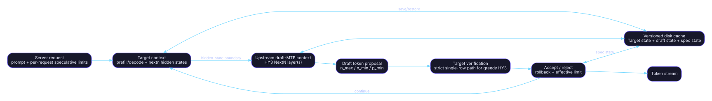

Graph and model architecture
Audit snapshot: fork
a5605a72768c6562241b248e268e33dc92787394; upstream86d86ed4396b4130922f7b9af26e3d9fc11a591b; inventory date2026-07-17.
Decision vocabulary: RETAIN = capability/ABI must survive; REFRESH = preserve capability but re-port onto current upstream; RETIRE = remove the fork patch and use upstream or archive it. S-FORK-HEAD S-UP-HEAD
Fork graph changes
The audited fork adds HY3 support in src/models/hyv3.cpp, including an MTP/NextN graph path, extra decoder-layer loading, shared embedding/head fallback, target-versus-draft layer filtering, and exposure of the hidden-state tensor consumed by the MTP layer. Commit 630fa5a… is the capability-owning anchor. S-HYV3-FORK S-C-630
The fork also modifies shared model/context/private-API files to create separate target and MTP contexts and to move hidden-state data between them. Those changes are spread across src/llama-context*, src/llama-ext.h, model loader/model files, and speculative code. S-C-630 S-CONTEXT-FORK S-EXT-FORK S-PR32-FILES
Upstream replacement
Upstream PR #25395 merged HY3 with MTP speculative decoding on July 13, 2026. The PR description identifies the base implementation as ported from ROCmFPX and adapts it to current upstream APIs; the pinned upstream tree now contains src/models/hy-v3.cpp. S-UP-PR25395 S-UP-HY3-MERGE S-HYV3-UP
Upstream also carries a separate split-MTP export commit, so the fork’s generic HY3 converter/export patch no longer needs to be maintained. S-C-F961 S-UP-SPLIT-MTP S-CONVERTER-UP
Private API divergence
| Concern | Fork API/behavior | Pinned upstream API/behavior | Decision | Primary sources |
|---|---|---|---|---|
| NextN embedding output | Fork-private pre-norm/nextn source handling. | Current upstream exposes embeddings_nextn-oriented plumbing. |
RETIRE fork API | S-EXT-FORK S-EXT-UP |
| MTP layer selection | Fork setters and graph-specific offsets. | Current upstream exposes nextn layer offset APIs. | RETIRE fork API | S-EXT-FORK S-EXT-UP |
| Other context access | Fork-specific target/draft wiring. | Current upstream private API includes other-context access for current graph architecture. | REFRESH callers | S-EXT-UP S-SPEC-UP |
| HY3 file/model class | src/models/hyv3.cpp. |
src/models/hy-v3.cpp. |
RETIRE fork model | S-HYV3-FORK S-HYV3-UP |
| Converter split export | Fork commit f961404…. |
Upstream commit cb489bc…. |
RETIRE fork patch | S-C-F961 S-UP-SPLIT-MTP |
What remains fork-specific
The generic model and graph implementation can be replaced, but the following behavior still requires explicit preservation or revalidation:
- strict greedy target verification for HY3;
- serialization/restoration of speculative state for disk caching;
- per-request speculative policy;
- ROCmFPX quantization of HY3 tensors and backend operation coverage;
- Strix-specific performance/acceptance validation.
These capabilities are implemented outside, or as deltas on top of, the generic HY3 graph. S-C-7D7 S-C-C81 S-C-B56 S-QUANTIZER S-BACKEND-TEST S-BUILD-STRIX
Recommended graph integration

- Adopt upstream HY3 and the current draft-MTP graph unchanged.
- Add a narrow strict-verification policy to the current speculative engine.
- Add explicit, versioned speculative-state serialization hooks only where upstream state APIs are insufficient.
- Keep ROCmFPX formats below the graph layer through normal GGML type traits and backend dispatch.
- Test target-token equivalence, cache restore equivalence, and multi-context/RPC behavior independently.
This sequence minimizes graph divergence while preserving the actual fork-only capabilities. S-HYV3-UP S-SPEC-UP S-RPC-MTP-FIX S-C-7D7 S-C-C81 S-QT-ENUM-FORK